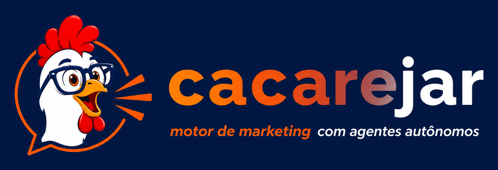

96 hot
Custo invisível
Gostei: entra como referência.
Gostei
Runink entra com site, LinkedIn, Instagram e TikTok.
Cliente modelo
Consultoria B2B em tecnologia, processos e transformação digital.
Nova experiência
Antes de gerar, a tela explica que o Agente vai cruzar canais diferentes. LinkedIn não recebe a mesma prescrição do TikTok; site vira apoio de autoridade e SEO.
Base de autoridade, blog, landing e termos técnicos.
Decisores, 3 níveis de rede, públicos e linguagem B2B.
O que está quente e o que deve ou não entrar no parecer.
O resultado deixa de ser texto solto e vira método.
Parecer estratégico
O LinkedIn deve construir tese e autoridade. O site precisa sustentar notoriedade com artigos e termos técnicos. Instagram e Reels entram como prova social, bastidores e cortes simples.
Prescrição imediata
Publicar uma tese por semana, um artigo pilar de apoio e transformar os melhores ângulos em criativos aprováveis.
Método do diagnóstico
Coleta multicanal
Site, LinkedIn, Instagram e briefing.
Leitura de mercado
Radar mostra padrões quentes.
Prescrição por canal
Cada canal recebe função própria.
Execução e recalculo
Acompanhamento ajusta a rota.
Tese, cases, comentários estratégicos.
Blog / SEO
Artigo pilar, FAQ, comparativos.
Bastidores, carrossel, depoimentos.
TikTok / Reels
Analogias curtas e cortes didáticos.
Pessoas, públicos, tecnologias e mensagens para anúncio.
Nível 1
Fundadores, página da empresa, site, promessa central e autoridade técnica da Runink.
Nível 2
Clientes, parceiros, concorrentes comparáveis e profissionais que comentam temas parecidos.
Nível 3
Operações, transformação digital, compliance, produtividade, gestores e compradores B2B.
Público 1
CEO, fundador e diretor. Mensagem: custo de não transformar processos.
Diagnóstico executivoPúblico 2
Operações e administração. Mensagem: retrabalho, eficiência e ganho prático.
ChecklistPúblico 3
TI, dados e compliance. Mensagem: segurança, integração e processo real.
Artigo pilarO mercado entra na conclusão, não fica isolado.
O que está quente
O Agente Radar traduz padrões vencedores para o contexto da Runink.
96 hot
Gostei: entra como referência.
Gostei91 hot
Gostei: usar linguagem humana.
Gostei82 hot
Agente decide.
Aberto55 hot
Não gostei: remove da rota.
Não gosteiConteúdos por canal, origem e decisão de verba.
Copy longa B2B com tese, dado, consequência e CTA para diagnóstico executivo.
Artigo pilar para sustentar anúncio e criar autoridade técnica.
Verba diária
Teto inicial do teste.
Posts ativos
Cada um começa com R$ 15/dia.
Critérios
Depois o Agente redistribui a verba.
O que ainda vamos reforçar agora.
Tela de campanhas
A tela deve mostrar campanhas aprovadas, em revisão, ativas, pausadas e vencedoras. Cada uma precisa explicar quanto recebeu, qual criativo venceu e por que a verba foi movida.
Em revisão
Agentes conferem marca, política e performance.
Em teste
Verba dividida igualmente no início.
Vencedor
Verba migra para melhor sinal.
Métricas conectadas
Métricas não podem ser uma ilha. Elas precisam voltar para Acompanhamento e atualizar a prescrição.
CTR: se baixo, trocar gancho e imagem.
CPL: se alto, ajustar público e oferta.
Conversão: se baixa, revisar landing/CTA.
Comentários: viram temas para novo artigo e posts.
Planner vivo, check-ins e recalculo da rota.
Ciclo de 30 dias
7 de 16 ações concluídas
Próximo foco: publicar artigo pilar e rodar teste com público decisor.
Histórico de check-ins
Semana 0
Runink sem calendário de tese e sem artigo pilar.
Semana 2
3 posts publicados, 1 tema gerou comentários de gestores.
Semana 4
Campanha ativa, CPL ainda alto, ajustar oferta.
LinkedIn: tese.
Blog: artigo pilar.
Comparativo antes/depois.
Primeiro teste pago.
Guia técnico.
Refazer Radar.
Remarketing.
Novo parecer.
Entrega comercial para cliente e rotina de revisão visual.
PDF executivo
Capa premium, sumário executivo, método, fontes, prescrições, Visão 360, Radar, cronograma, campanhas e acompanhamento.
Cliente, data, objetivo e agente.
Parecer, ações e cronograma.
Radar, feedbacks e oportunidades.
Check-ins, métricas e próximos passos.
QA antes da apresentação
Criar diagnóstico
Confirmar fontes e método.
Rodar Radar
Marcar gostei/não gostei.
Enviar para aprovação
Editar um criativo e aprovar verba.
Check-in
Registrar evolução e exportar PDF.